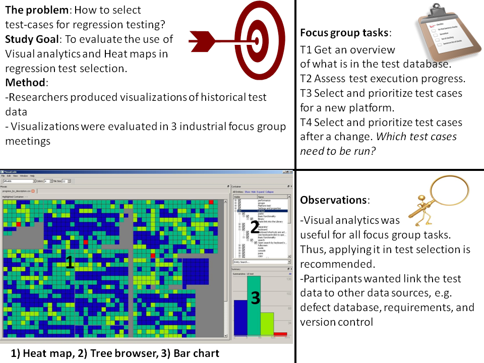

Abstract
Background: Test managers have to repeatedly select test cases for test activities during evolution of large software systems. Researchers have widely studied automated test scoping, but have not fully investigated decision support with human interaction. We previously proposed the introduction of visual analytics for this purpose.
Aim: In this empirical study we investigate how to design such decision support.
Method: We explored the use of visual analytics using heat maps of historical test data for test scoping support by letting test managers evaluate prototype visualizations in three focus groups with in total nine industrial test experts.
Results: All test managers in the study found the visual analytics useful for supporting test planning. However, our results show that different tasks and contexts require different types of visualizations.
Conclusion: Important properties for test planning support are: ability to overview testing from different perspectives, ability to filter and zoom to compare subsets of the testing with respect to various attributes and the ability to manipulate the subset under analysis by selecting and deselecting test cases. Our results may be used to support the introduction of visual test analytics in practice.

Ref
Engström E, Mäntylä M.V., Runeson P., Borg, M. "Supporting Regression Test Scoping with Visual Analytics", in Proceedings of the 7th IEEE International Conference on Software Testing, Verification and Validation (ICST) 2014 (ICST), March 31 - April 4, 2014, Cleveland, Ohio, USA
{kind=link}